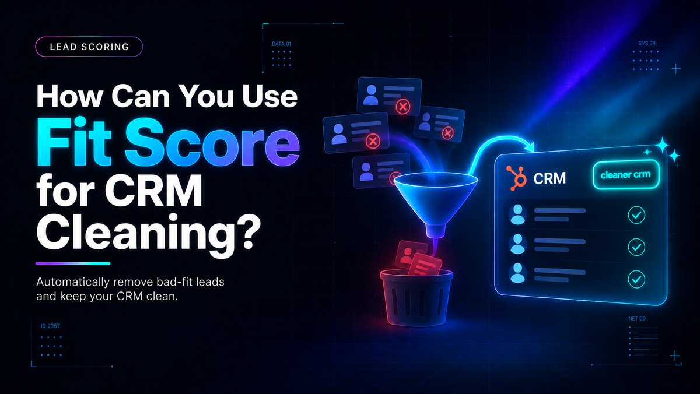

How Can You Use Fit Score for CRM Cleaning?

Direct answer: Building a HubSpot fit score that grades contacts and companies against your ideal customer profile automatically surfaces records that were never going to close. Once those disqualified leads are labeled, CRM cleaning, from suppressing bad emails to archiving stale companies, becomes a mechanical filtering exercise instead of an open-ended manual audit for lean startup teams.
- Fit measures identity (job title, company size, industry) while engagement measures decaying behavior; blending them into one score hides which leads are worth cleaning up.
- Excluding never-real-opportunities (students, competitors, personal emails) from scoring entirely does most of the CRM cleaning work automatically.
- Negative scoring for known disqualifiers removes bad-fit leads and prevents them from cluttering the CRM without a manual audit team.
- Suppress disqualified records instead of deleting them, this preserves historical data while stopping pollution of active reporting and sales queues.
- Fit score outputs are only reliable if firmographic fields are filled in; incomplete data can misclassify good-fit leads as disqualified.
Questions this article answers
- What does a fit score actually measure?
- Why are disqualified leads the real source of CRM clutter?
- How do you set up fit score for disqualification in HubSpot?
- What does the fit-to-clean-CRM workflow look like?
- Why does bad data undermine the fit score itself?
- What maintenance cadence works for resource-constrained teams?
- What common pitfalls should you avoid?
- What is the revenue impact of ignoring this?
- Plus 6 FAQs answered below
What does a fit score actually measure?
A fit score measures who a lead is, their identity attributes like job title, company size, and industry, while an engagement score measures what they do, and conflating the two is the main reason startup CRMs stay dirty.
HubSpot's own documentation explains that you can create lead scores for contacts, including engagement scores, fit scores, or combined engagement and fit scores. Fit is about identity, the stuff that doesn't change much: job title, company size, industry, revenue, and the core question is whether the person matches the profile of a company you actually close, according to one practitioner guide.
Engagement, by contrast, tracks behavior that decays quickly. A 2026 analysis of HubSpot scoring notes that buying behavior at the contact level has gotten harder to read, and the signal-to-noise ratio on a composite grade has fallen further than most ops teams want to admit. When fit and engagement are blended into one number, a low-fit visitor who binges your blog can look identical to a high-fit VP who quietly checked pricing once. Splitting the scores lets you use fit as a pure filter and engagement as a queue-prioritization signal.
Why are disqualified leads the real source of CRM clutter?
Most CRM hygiene problems get framed as data problems like duplicates or missing fields, but for lean startups the real driver is qualification: if a lead was never going to buy, nobody keeps their record accurate and it rots in place.
A fit-based approach flips the usual question from "is this record clean" to "should this record even be scored." As one HubSpot-focused guide recommends, for contacts who were never a real opportunity, such as students, competitors, or personal email addresses, don't score them at all; create a disqualification list and exclude them from scoring entirely, since unsubscribes are a list management issue, not a scoring one.
This single move does most of the cleaning work for you, because once a lead is tagged as disqualified by fit, every downstream process, routing, nurture, reporting, can simply exclude that segment rather than requiring manual verification of each record's accuracy.
The negative-scoring layer reinforces this. A practical lead-scoring model recommends assigning negative points for classic disqualifiers: a personal email instead of a business domain, engagement only with career pages, association with a competitor or spam source, or multiple form submissions with fake data. This approach quickly removes bad-fit leads, reducing sales and marketing inefficiencies, and prevents low-value leads from cluttering the CRM.
How do you set up fit score for disqualification in HubSpot?
You define ICP criteria, assign positive points for matches and negative points for known disqualifiers, then set a threshold below which contacts are automatically flagged, all inside HubSpot's native scoring tool.
According to HubSpot's own knowledge base, you can build custom lead scores based on record actions or properties, and scores assign values to leads so you can evaluate which contacts, companies, or deals are likely to become customers, with each score evaluating records based on criteria and setting values for a corresponding score property.
For a startup, the practical build looks like this: define ICP criteria (industry, employee count, job title, tech stack, funding stage), assign positive points for matches, assign negative points for known disqualifiers, and set a threshold below which contacts are automatically flagged. A recent implementation guide recommends using lead score settings deliberately to include or exclude segments, which keeps CRM data clean and actionable while preventing sales false positives.
Because fit criteria are largely static, they behave differently from engagement scores: as one HubSpot user community and vendor source notes, you can't reset fit, but you can reset engagement, which is helpful after a deal closes lost. This means disqualification logic, once built, keeps working without constant re-tuning.
What does the fit-to-clean-CRM workflow look like?
Score everything on entry, isolate anything below your disqualification threshold, and route those records into a suppressed or non-marketing list rather than deleting them, which preserves historical data while stopping pollution of active reporting and sales queues.
A HubSpot data-cleanup resource confirms this pattern directly, advising teams to leverage HubSpot indicators such as hard bounces or low engagement to move contacts into non-marketing status or clean them from the database.
This is far less labor-intensive than traditional deduplication or field-standardization projects, because the fit score has already done the triage. Instead of reviewing thousands of records, your team reviews one segment, "fit score below X", and that segment defines your entire cleanup queue. Related database clean-up guidance and HubSpot cleanup checklists reinforce building this segment-first approach.
Why does bad data undermine the fit score itself?
A fit score is only as good as the data feeding it, so incomplete CRM records can quietly sabotage the disqualification logic, causing genuinely good-fit leads to be miscategorized as disqualified.
One HubSpot-focused source is explicit about this failure mode: bad CRM data can lead to missed opportunities, since for manual lead scoring, key scoring criteria such as company size, industry, or intent data being lost can artificially depress HubSpot scores.
A separate analysis of scoring failures makes the same point from the buyer-quality side, noting that teams have spent weeks building scoring models only to realize that a large share of industry fields are blank and many contact records haven't been updated in months, meaning scoring on dirty data just automates bad decisions faster.
Practically, this means startups should run a lightweight enrichment pass, filling in company size, industry, and title via a free enrichment tool or manual LinkedIn lookups, before trusting fit score outputs enough to disqualify at scale.
What maintenance cadence works for resource-constrained teams?
Because CRM data degrades continuously, fit-based cleaning cannot be a one-time project; re-running fit scoring monthly and reviewing the disqualified segment quarterly keeps disqualification logic accurate without enterprise tooling.
Industry benchmarks show just how fast this happens: B2B contact data decays between 22.5% and 70.3% annually, with email decay accelerating to 3.6% monthly as of November 2024, meaning nearly three-quarters of prospect databases become outdated within 12 months.
For a startup with a small target account list, this decay rate can quietly invalidate fit-score inputs like job title or company size within a single quarter. The fix does not require enterprise tooling: re-run fit scoring monthly, review the disqualified segment quarterly to catch miscategorized leads, and re-enrich core ICP fields (title, company size, industry) whenever a contact re-engages. This mirrors general data-hygiene guidance recommending quarterly data quality audits at minimum, checking email validity before major campaigns, re-enriching key accounts annually, and setting up processes to catch decay before it compounds, a pattern also confirmed by ZoomInfo's analysis.
What common pitfalls should you avoid?
Avoid over-engineering the scoring model before you have enough data, and avoid deleting disqualified records instead of suppressing them, since deletion destroys historical attribution that could matter later.
Two mistakes recur most often among early-stage teams. First, over-engineering the model before there is enough data to support it: one analysis notes that early-stage startups struggle to implement behavioral scoring because they lack historical data, since these companies get very few leads each month, sometimes fewer than 100, which makes complex scoring systems counterproductive.
For these teams, a simple rule-based fit score, not a machine-learning model, is the right starting point, a point echoed by guidance suggesting that teams with under 500 leads per month or less than 1,000 historical conversions should start with a rule-based model, since it is transparent, explainable to sales, and faster to implement than machine learning approaches.
Second, deleting disqualified records instead of suppressing them, which destroys historical attribution data that could matter later if a disqualified contact's company grows into your ICP. The safer pattern is exclusion from active workflows, not deletion.
What is the revenue impact of ignoring this?
A dirty CRM is a direct drain on revenue: research shows poor data quality costs U.S. businesses trillions annually, and 37% of CRM users lost revenue directly due to poor data quality, losing an average of 16 sales opportunities per quarter.
A dirty CRM is not a cosmetic problem, it is a direct drain on revenue: research shows that poor data quality costs U.S. businesses trillions annually in aggregate, and at the individual company level, Validity's 2025 State of CRM Data Management report found that 37% of CRM users lost revenue directly due to poor data quality, and companies lose an average of 16 sales opportunities per quarter from unreliable data.
For a resource-constrained startup, every hour a founder or rep spends chasing a disqualified lead, verifying a stale field, or working a duplicate record is an hour not spent on the accounts that actually convert. Using fit score to pre-filter disqualified leads before they ever consume rep attention converts CRM cleaning from a recurring cost center into a direct lever on pipeline efficiency and close rate.
Frequently asked questions
What is the difference between a fit score and an engagement score in HubSpot?
A fit score measures who a lead is, using static identity attributes like job title, company size, industry, and revenue, while an engagement score measures what a lead does, which is behavior that decays quickly. HubSpot lets you build either separately or combine them, but blending the two makes it harder to tell a low-fit but active visitor from a high-fit but quiet buyer.
Should disqualified leads be deleted from the CRM?
No, disqualified leads should be suppressed or moved to a non-marketing list rather than deleted. This preserves historical attribution data while stopping the records from polluting active reporting, sequences, or sales queues, which matters if a disqualified contact's company later grows into your ICP.
How often should a startup re-run fit scoring for CRM cleaning?
A practical cadence is to re-run fit scoring monthly, review the disqualified segment quarterly to catch miscategorized leads, and re-enrich core ICP fields like title, company size, and industry whenever a contact re-engages. This matches broader data-hygiene guidance recommending quarterly audits at minimum.
Can bad CRM data cause a good-fit lead to be wrongly disqualified?
Yes. Since fit scores rely on firmographic fields like company size, industry, and title, missing or outdated data can artificially depress a genuinely good-fit lead's score, causing it to be miscategorized as disqualified. Running a lightweight enrichment pass before trusting disqualification outputs at scale helps avoid this.
Should early-stage startups use machine learning for lead scoring?
No, teams with under 500 leads per month or less than 1,000 historical conversions should start with a simple rule-based fit score rather than machine learning. Rule-based models are transparent, explainable to sales, and faster to implement when there isn't enough historical data to support a complex model.
What kinds of leads should be excluded from scoring entirely?
Contacts who were never a real opportunity, such as students, competitors, or personal email addresses, should be placed on a disqualification list and excluded from scoring entirely rather than scored and later filtered, since this single move does most of the CRM cleaning work automatically.
Sources
- CRM Switch: HubSpot Lead Scoring
- Xcellimark: How to Build Lead Scoring in HubSpot
- HubSpot Knowledge Base: Understand the Lead Scoring Tool
- RevPartners: Mastering Lead Scoring in HubSpot
- CheckpointGTM: Fit vs Engagement Scoring
- Anne Omaly: HubSpot Lead Scoring 101
- Landbase: Data Decay Rate Statistics
- KeepSync: CRM Data Decay Statistics and Solutions
- Salesmotion: B2B Data Decay Strategy
- ZoomInfo: B2B Data Decay
- Lead Advisors: Lead Scoring
- Artemis GTM: Lead Scoring
- ZoomInfo: Lead Scoring
- Default: Lead Scoring Model
- House of Martech: Lead Qualification Scoring Models
- Prospeo: Explicit vs Implicit Lead Scoring
- Default: HubSpot CRM Data Cleansing
- Vantage Point: HubSpot Database Clean-Up
- Insycle: HubSpot Data Cleaning
- Nav43: HubSpot CRM Cleanup Checklist
- Prospeo: Lead Quality Scoring
- Slash Experts: Hidden Flaws in Behavioral Lead Scoring
- Default: HubSpot Lead Scoring
- Verum Inc: CRM Data Decay Rate
- Coffee.ai: Hidden Costs of Bad CRM Data
- SparkDBI: CRM Data Decay Rates by Industry
Want a fit score built and wired into automatic CRM cleanup, not just a scoring exercise?
Contact →